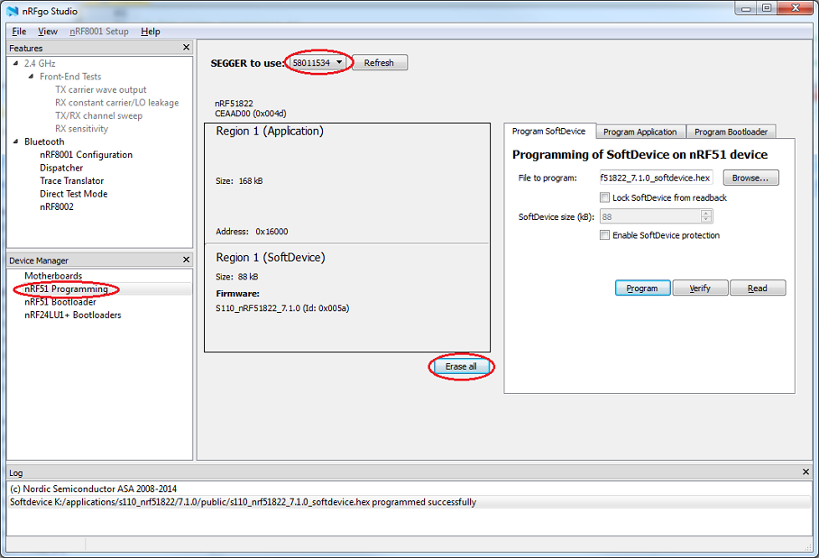
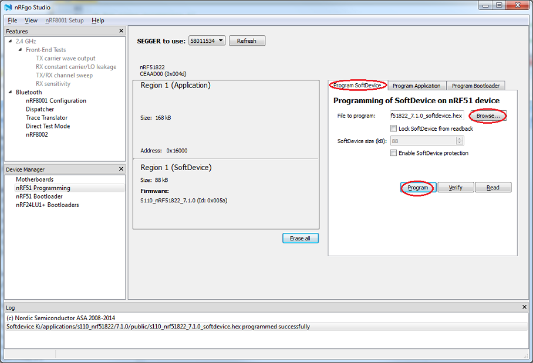
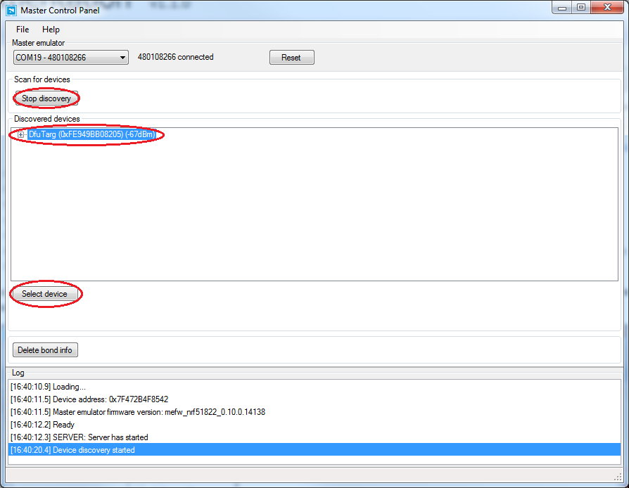

This page describes the upgrading procedure using nRFgo™ Studio and the Master Control Panel (downloadable from http://www.nordicsemi.com/).
Three steps are required: installing the Bluetooth Low Energy stack binary, installing the bootloader for DFU, followed by installation of the application binary through DFU.
Upgrade procedure
- Open nRFgo Studio.
- Select nRF51 Programming as shown in the figure below.
- Select correct SEGGER to use.
- Click Erase all to ensure a clean start. nRF51 Programming
- Select the Program SoftDevice tab.
- Browse for the SoftDevice Hex file found in the SoftDevice folder (default location: <InstallFolder>\SoftDevice).
- Click Program. Program SoftDevice
- Select the Program Bootloader tab.
- Click Browse to locate the bootloader HEX file (default location: <InstallFolder>\Precompiled hex).
- Click Program
 Program DFU Bootloader
Program DFU Bootloader - Open Master Control Panel.
- Click Start discovery
- Ensure beacon HW is in DFU bootloader mode (LED softblinks blue).
- Click on the DfuTarg device and click Select device. Select DFU Target
- Click on Discover services and DFU.
- In the Device Firmware Update pop-up window, browse to your HEX-file and select if this is a application, softdevice or bootloader upgrade.
- Click on Program to start OTA DFU upgrade.
(Default location for SoftDevice: <InstallFolder>\SoftDevice. Default location for beacon and bootloader FW: <InstallFolder>\Precompiled hex)
Master Control Panel, v.3.7.1
Master Control Panel, Version 3.7.1 and earlier does not support DFU init_packet_handling. This SDK contains an updated version of the ble_dfu.py python script, which works stand-alone or together with MCP, v3.7.1.
To update MCP to support the new Init packet, you must substitute the ble_dfu.py script provided in MCP with the version provided here. To do so, copy the files found in <InstallFolder>\Source Code\nrf51_beacon\ble_app_beacon_dfu\ble_dfu_send_hex\dfu.
Overwrite the files used by MCP, which are located in "c:\Program Files (x86)\Nordic Semiconductor\Master Control Panel\3.7.1.8567\lib\dfu\".
- Note
- The files must be copied as administrator in Windows.